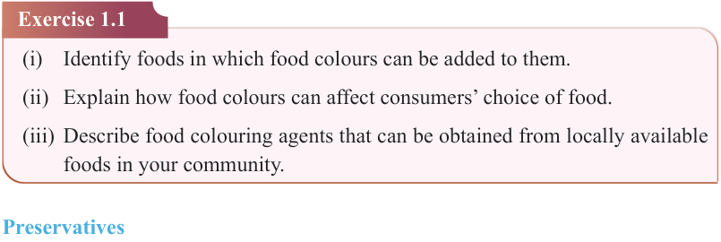
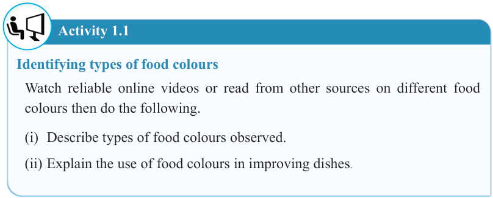
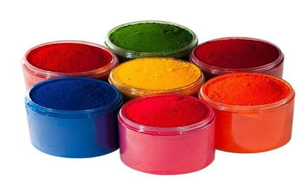

3


Food and Human Nutrition

Form Two



Figure 1.2: Food colours in powder form
Activity 1.1
Identifying types of food colours
Watch reliable online videos or read from other sources on different food colours then do the following.
(i) Describe types of food colours observed.
(ii) Explain the use of food colours in improving dishes.
Exercise 1.1
(i) Identify foods in which food colours can be added to them.
(ii) Explain how food colours can affect consumers’ choice of food.
(iii) Describe food colouring agents that can be obtained from locally available foods in your community.
Preservatives
These are substances added to food to prevent spoilage caused by microorganisms like bacteria, mould and yeast or chemical changes like oxidation. Preservatives are added to products primarily to extend their shelf life. They ensure that the food remains fresh and appealing for longer periods. Additionally, preservatives play a crucial role in preventing food borne illnesses by inhibiting the development of pathogens that can cause diseases. Excessive use of preservatives may cause allergic reactions to some individuals. Preservatives are commonly used in food products like jams, juices, canned foods and baked goods. There are two types of preservatives
17/09/2025 16:30